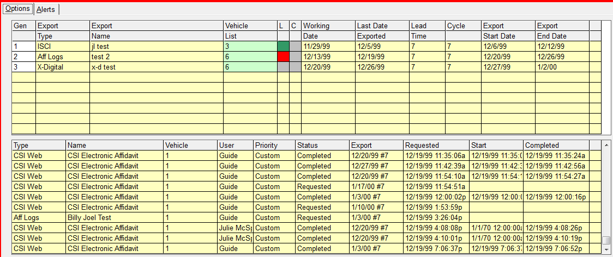
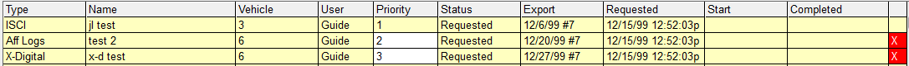
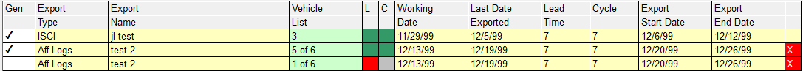

Generating an Export
To export, select each desired export(s) in the Gen (Generate) column, in the order you want them processed. The exports are assigned numeric priority numbers in the order you click on them, not in the order they are listed in the header.

After the exports to be generated are selected, press the Generate button, and the exports will be copied to the Export Management Queue. Your exports will receive priority numbers following the last export already in the queue.

You may now leave the export center screen and do other work. Your PC is not tied up waiting for the exports to complete as the exports are being run in the background.
As exports complete, the next pending export is moved up a row, with a corresponding increase in priority. Exports that are processing always have a Priority of 1, and cannot be altered. Once exported, they go to the bottom of the queue with a Status of Completed, where they remain for two days for historical purposes. The completed export information can be examined for a week back from today via the Export History report.
Export Check Programs
The export Center has two check programs that ensure each vehicle in the queue has had its log generated and is not missing copy.
Log Check
Each time you enter the Export Center, the system automatically checks that each vehicle within an export with a priority number or a check in the Gen column, has had its log generated in the Traffic system. If any vehicle within an export is missing its log, the export will be split into two batches, those that are ready for exporting (have had logs generated) and those that are awaiting log generation.
The status of each export will appear in the “L” (log) column in the top portion of the screen.
Each status is color coded as follows:
- Green: Logs are Generated for export dates
- Red: Logs are not Generated for export dates
- Gray: Log status is undetermined
Copy Check
Similar to the Log Check, the system also checks that each vehicle within an export that has a priority number or check in the Gen column has copy assigned to each of its spots. If any vehicle within an export is missing copy, the export will be split into two batches, those that are ready for exporting (every spot has copy) and those that are missing copy.
Copy check can be generated at any time by clicking the Check Copy button.
The copy status for each export is shown in the “C” (copy) column in the top portion of the screen.

Each status is color coded as follows:
- Green: All spots for export dates have copy
- Red: Not all spots for export dates have copy
- Gray: Copy status is undetermined
Changing the Order of the Export Queue
At any time, a user can click the Export Center button on the Jobs screen to view all processing, pending, and completed exports for the day.
Unless you have special permissions, you can only change the priority order of your exports. To swap the priority order between your exports, you can click in the priority column and renumber each export to either increase or decrease its position in the queue. Once an export’s priority position is manually altered, all other exports for that user will be reordered. Other users’ exports’ priorities will not be altered. A manager can alter anyone’s priorities. An Export with a Priority 1 cannot be altered by anyone, as it is currently being processed.
Removing an Export from the Queue
If you realize that an export is not ready to run after you have generated the queue, click the X in the far right column, and the export will go back to the header area until you regenerate it. A user can only remove his/her own exports. If given the authority to do so, a supervisor can remove any, or all, user’s exports.
Postponing an Export
If you need to postpone an export, you can do so by clicking “Postpone all”. To access this feature, click on the green vehicle field in the upper portion of the screen. This will bring you to the Vehicle Selection screen. The “Postpone all” button is in the lower right corner.